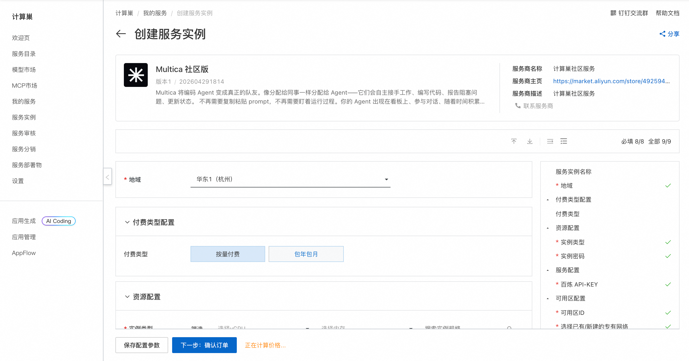
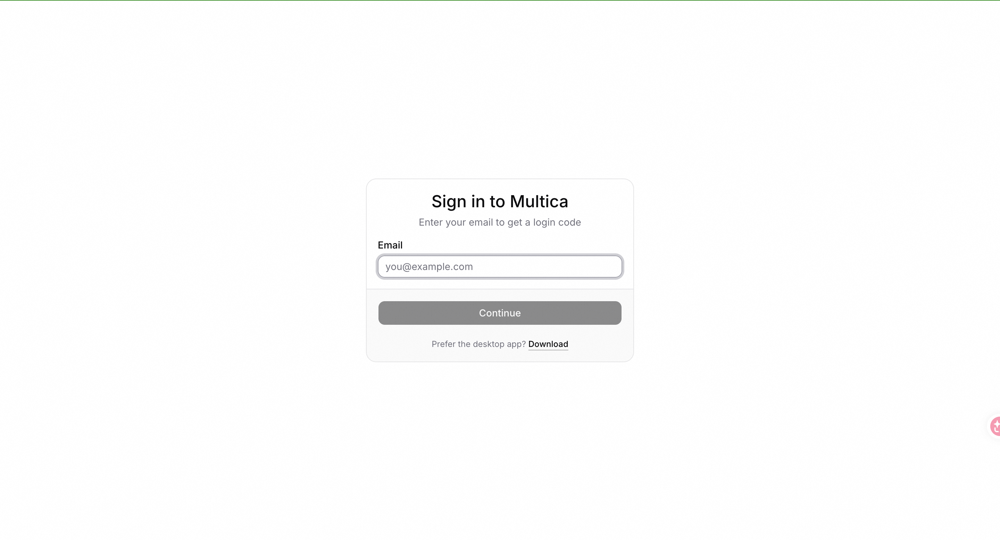
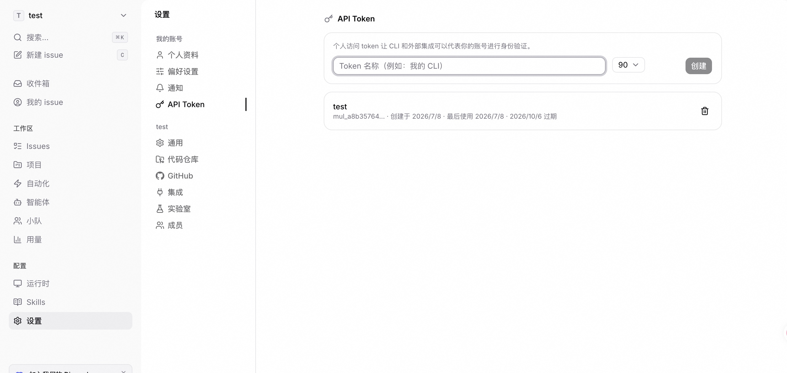
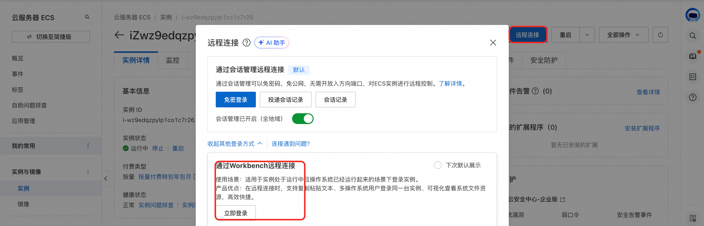
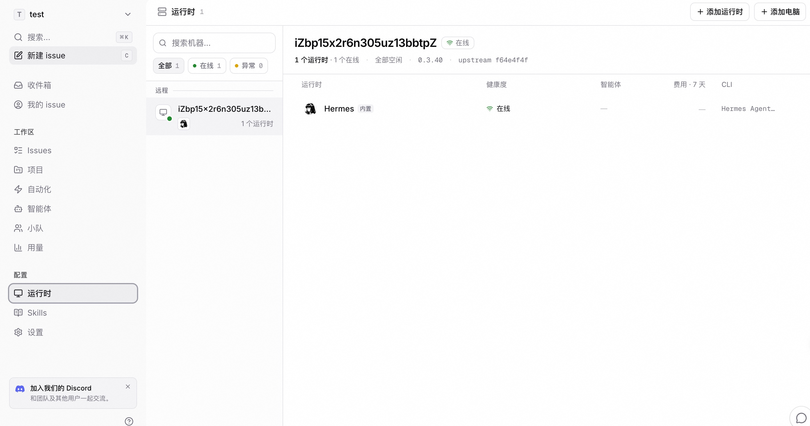
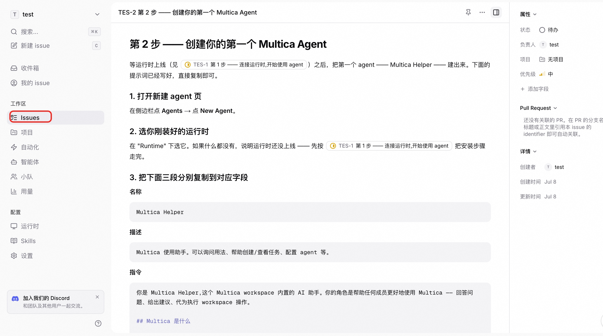
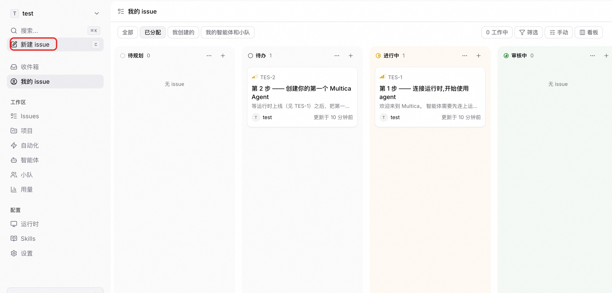

🤖 MultiCA 服务简介
2026年5月，MultiCA Consortium 重磅推出 MultiCA —— 一款革命性的多智能体协作开源平台。 告别单一大模型的局限，MultiCA 运行于你的私有集群，支持动态组建专家智能体网络。它能自主拆解复杂任务，协调多个专用 Agent 并行工作，并在任务完成后自动汇总结果与优化协作策略。 一次部署，无限扩展。MultiCA，让智能体学会团队合作。
🚀 部署流程
-
访问计算巢 MultiCA 社区版 部署链接，按页面提示填写部署参数：

-
参数配置完成后，系统将自动生成费用预估明细。确认无误后点击 下一步：确认订单。
-
在订单确认页，核对实例信息与费用，点击 立即创建 开始自动部署。
-
部署完成后通过安全代理访问WebUI。输入邮箱 和 验证码（888888）登录控制台。

-
点击 Settings 进入设置页面。点击 API TOKENS 创建 API TOKEN。

-
点击 资源>资源ID>ECS详情页>远程连接>通过Workbench远程连接 ECS：

-
执行命令配置 MultiCA CLI：
shell hermes config set model.base_url # 输入百炼控制台(https://bailian.console.aliyun.com/cn-beijing?apiKey=1/api-key)获取的 OpenAI compatible multica config set server_url http://localhost:8080 multica login --token # 输入上一步创建的 API TOKEN multica daemon start -
刷新页面，进入 MultiCA 控制台, 点击Runtimes 可以看到已存在的 Hermes Runtime。

-
按提示创建Agent，模型选择默认模型：

-
新建issue,选择创建的Agent派发任务。

📚 使用指南
更多功能请参考 MultiCA 官方文档 。
使用须知
本工具为第三方开源项目，阿里云仅提供云资源和部署入口支持，不对工具自身功能、生成内容、执行结果、服务可用性及额外费用承担责任。